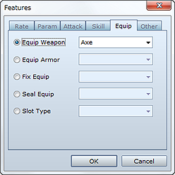

The Features setting for actor, class, weapon, armor, enemy, and state data defines the unique characteristics and functions of each type of data.
The following 24 types of features can be applied. Complex features can be defined by combining the data created here.
Class, weapon, armor, and state features are applied as character features while their data is applied to the character.
Be careful when setting features that permanently restrict actions. For example, a weapon set with a feature that locks the equipping of weapons will prevent an actor from unequipping it once it has been equipped.

To set a feature, double-click a blank area within the field. In the Features dialog box that appears, select the type of feature you want to set and then specify its settings.
The characteristics you set for a feature will be displayed in the features list. You can edit the settings you made by clicking a feature in the list. And in the shortcut menu that appears when you right-click a feature, you can perform such operations as copying and deleting settings.
Changes damage taken from elemental attacks. Specify the target element and the rate of variability (0 to 1000%). Specifying a rate over 100% results in damage greater than the standard amount, indicating a weakness against the specified element.
Changes the probability at which the use of a skill or item for which the Debuff effect has been set will succeed in debuffing a parameter. Specify the target parameter and the rate of variability (0 to 1000%). A 100% setting means no variability.
Changes the probability at which the use of a skill or item for which the Add State effect has been set will succeed in adding a state. Specify the target state and the rate of variability (0 to 1000%). A 100% setting means no variability.
Negates the specified state. Specifying K.O. results in characters failing to be knocked out even when their HP falls to 0.
Rate of increase/decrease for parameters such as max HP and ATK. Specify the target parameter and the rate of variability (0 to 1000%). A 100% setting means no variability.
The rate of increase/decrease for additional parameters such as max accuracy and evasion. Specify the target parameter and the percentage to add on (-100 to 100%). The default value is 0%.
The rate of increase/decrease for special parameters such as probability of being targeted for attack and defense effectiveness. Specify the target parameter and the rate of variability (0 to 1000%). The default value is 100%.
Applies an element for normal attacks.
Applies a state change effect for normal attacks. Specify the target effect and the success variability (0 to 1000%). A 100% setting means no variability.
Increases/decreases agility when the player selects a normal attack in battle. Specify a value between -999 and 999.
Increases the number of times a normal attack damages a target. The standard value is 1. Specify the number of times you want to increase it.
Allows the specified skill type to be selected as a command.
Prevents the specified skill type from being selected.
Sets the specified skills as being available for use.
Disables the use of the specified skill.
Enables the equipping of the specified type of weapon.
Enables the equipping of the specified type of armor.
Prevents the changing of equipment for the specified equipment slot. Used for instances where you do not want the player changing the equipment of an actor that has been temporarily added to the party.
Prevents the equipping of equipment for the specified equipment slot. For example, preventing the use of shields for a given weapon makes it a two-handed weapon, and preventing the wearing of a headgear for a given piece of armor results in full body armor.
Can only be set to Dual Wield. This enables the equipping of two weapons in exchange for not being able to equip a shield.
Increases by one the number of times actions can be taken in battle by the specified probability. When you apply multiple instances of this setting, the game decides whether to increase the number of times actions can be taken individually based on the specified probabilities. For example, entering 50% twice results in the probability of the actions increasing by two and the probability of them not even increasing by one to both be 25% (50% × 50%).
Applies a feature relating to battle actions.
| Auto Battle | Character acts independently without accepting player commands. |
|---|---|
| Guard | Reduces damage taken at a set rate. |
| Substitute | Character suffers attack in place of allies with less HP. |
| Preserve TP | Accumulated TP are retained for the next battle.Without Preserve TP, TP is reset at each combat and TP of each character is set at random when beginning the next battle. |
Valid only for enemies. Changes the effect for when they are knocked out to the one that you specify.
Applies a feature relating to party actions. It is enabled as a characteristic for the entire party if at least one of the party members has it.
| Halve Encounters | Halves the frequency of encounters while moving on the map. |
|---|---|
| Disable Encounters | Eliminates the chance of encounters while moving on the map. |
| Disable Surprise | Eliminates the chance of surprises (situations in which only the enemy troop is able to act on the first turn) when battles occur. |
| Increase Preemptive Strike Rate | Increases the chance of a preemptive strike (only the party is able to act on the first turn) when battles occur. |
| Double Money Earned | Doubles the amount of gold earned when the party wins a battle. |
| Double Item Acquisition Rate | Doubles the chance of getting items from enemies when the party wins a battle (only when items have been set for the defeated enemy). |